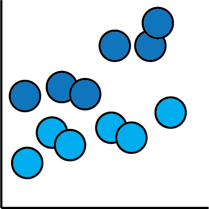
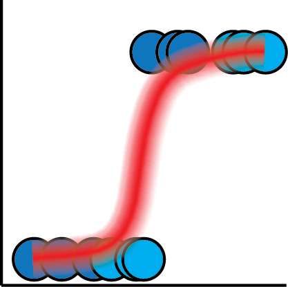
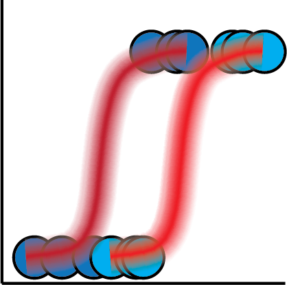
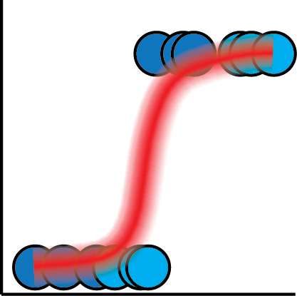
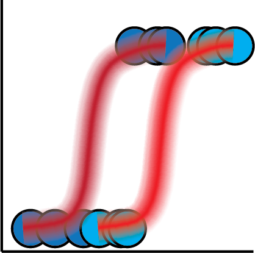
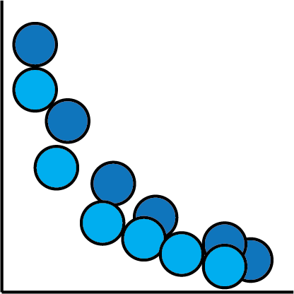
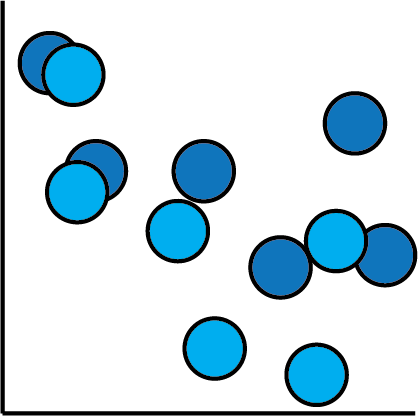

Fret Not, It's Curve Fitting All The Way Down!

Eric J. Ma, Digility 2018
Scan QR Code to save my contact info.
Follow Along!
About Myself
- Investigator, Scientific Data Analysis, NIBR
- MIT Biological Engineering, ScD, 2017
- Self-taught machine & deep learner, Bayesian Pythonista
Goals
- Demystify Bayesian statistical inference.
- Illustrate the link between Bayesian statistics and deep learning.
Estimation


Linear Regression



Logistic regression

 



Parametric Curves



Neural Networks
